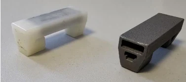

Industrial problem
A magnetic conveyor used polymer supports to hold belt magnets in position. Recurrent cracking of the original plastic components created concerns related to contamination and wear. During my mechanical engineering internship at BFR Systems EuroCri, the task was to develop a more durable alternative that could be manufactured at a practical cost.
Design and validation activities
I modelled the supports and conveyor assembly in SolidWorks and evaluated a redesign using 316L stainless steel with additive manufacturing in mind. The work included experimental checks of how support geometry influenced magnetic attraction, adjustment of local wall thicknesses, and interaction with prospective suppliers.

Manufacturing and cost trade-off
The design evolved in response to manufacturing constraints and supplier feedback, including geometry and wall thickness decisions intended to reduce unwanted magnetic interference while maintaining functional requirements.
63% lower quoted cost compared with the initial supplier quotation, following design optimisation and supplier negotiation. This is a quotation comparison, not a stated reduction in operating costs.
Deliverables and outcome
- SolidWorks models of the support and belt assembly.
- Manufacturing-oriented geometry revisions and material specification.
- CAD, DXF and STEP deliverables for supplier discussions.
- Supplier sourcing and cost/feasibility evaluation.
Professional internship project. Confirm employer permission before publishing industrial drawings, confidential dimensions, process details or supplier-sensitive information. The visuals and summary are provided here as a portfolio draft for review.